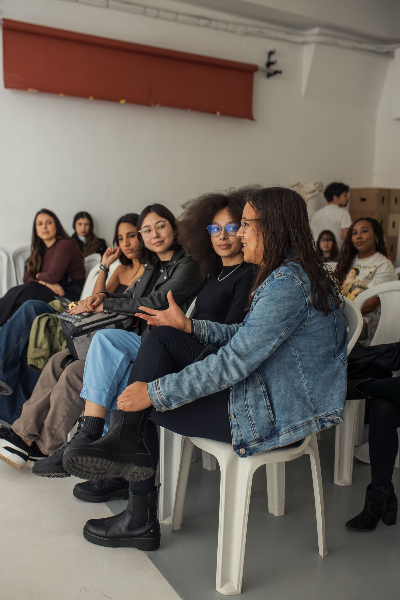
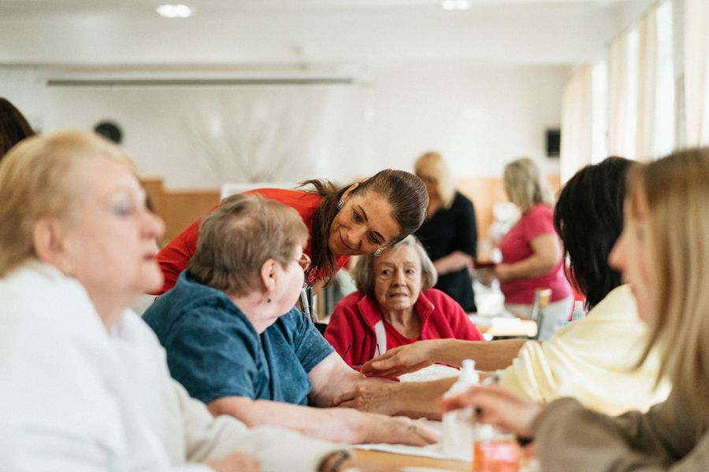
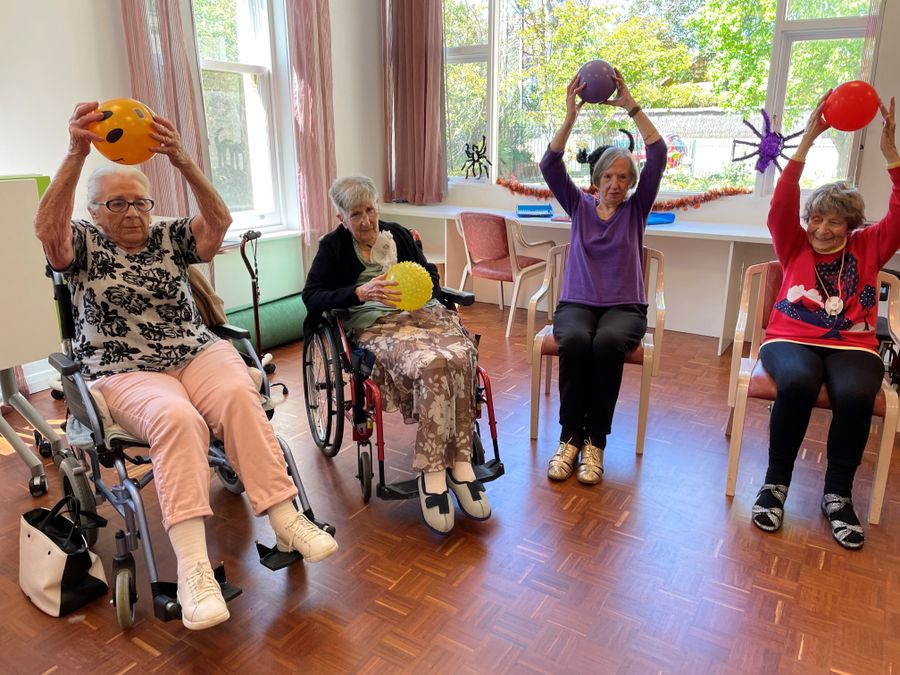
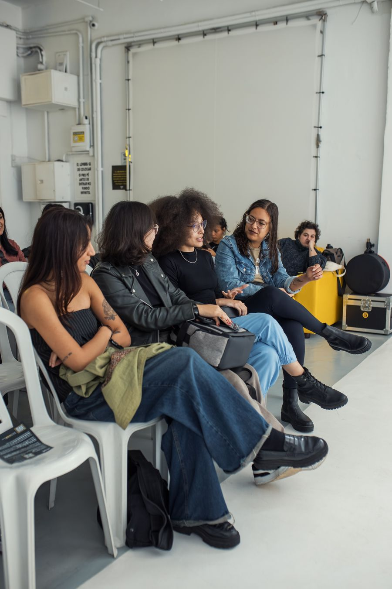
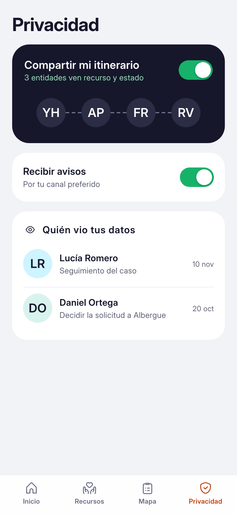
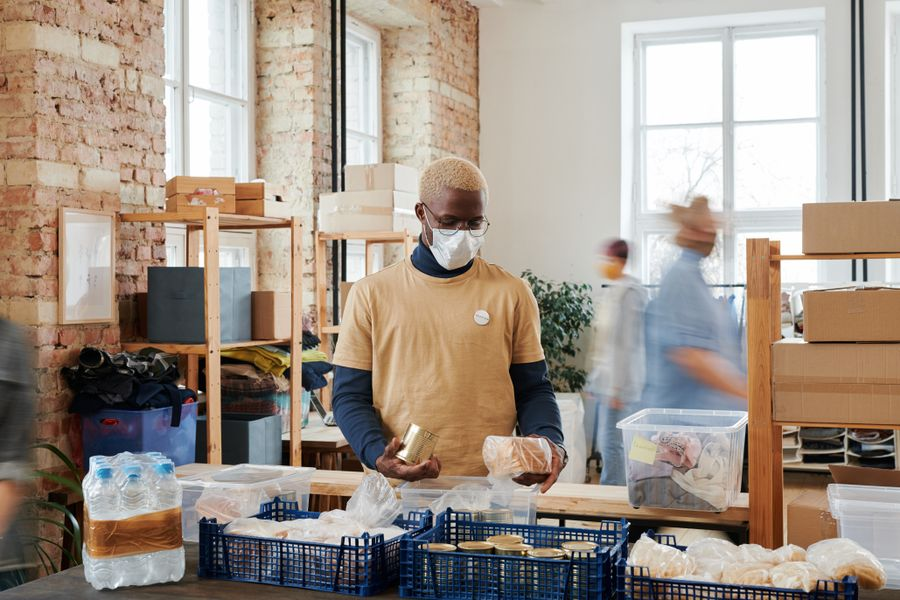

Propuesta para tu ciudad
Ayuda y actividades cerca de cada persona
Brújula Ciudadana reunirá en un mapa los recursos de las entidades de cada barrio, siempre al día. La persona se registra una vez y alguien la acompaña.
- Gratuito para la ciudadanía
- Los datos, bajo control de cada persona
- Con las entidades del barrio

actividades esta semana
entidades cerca
Mapa de recursos
Lo que hay cerca, y cuándo
Mapa de un distrito: talleres, comedores, asesorías, grupos de apoyo.
Sin conexión no se ve el fondo del mapa. Los puntos y las tarjetas siguen disponibles.
Cómo funciona
Tres pasos, sin papeleo repetido
Así será el camino de una persona. Cada paso se puede probar en la demostración.
Cuenta su situación
Se registra una sola vez, desde el teléfono, con pocas preguntas.
Unos 5 minutos
Alguien la acompaña
Un conector cercano la llama, la orienta y le propone recursos.
Entre 24 horas y 5 días hábiles
Participa, con su agenda
Sabe a qué está apuntada, cuándo le toca y puede ir con su familia.
Todo en un mismo lugarCómo funciona un recurso
Cada recurso es una actividad con fecha
Un taller, un comedor o una asesoría funcionan igual: tienen cuándo, cuántas plazas y quién va. Así lo vería una persona en su teléfono.

FormaciónCuándo
Plazas
Próxima fecha · Sáb 21 nov
Tu uso
Ejemplo con datos ficticios
Comunicados
La entidad avisa, y todo queda registrado
Un cambio de hora o una cancelación llega como aviso a quienes van, por la aplicación y por correo.
Aviso de una fecha
Sale directo a quienes están apuntados a ese recurso.
Comunicado de la entidad
Los del conector los aprueba la coordinación antes de salir.
Empieza a las 12:00. Asociación Puentes.

Seguridad y datos
Los datos son de cada persona
La persona elige qué permite y ve quién consultó sus datos.
Decide qué se comparte
Compartir con otras entidades es opcional y se puede retirar.
Ve quién miró sus datos
Cada consulta queda registrada con nombre, fecha y motivo.
Cada entidad ve lo justo
Solo lo necesario para decidir una solicitud, nunca todo el expediente.
Protección reforzada
Quien está en riesgo no recibe envíos masivos ni aparece en listas.
¿Y el documento de identidad? Servirá para comprobar la identidad y no abrir dos expedientes a la misma persona. Quien lo tenga en trámite o no lo tenga podrá empezar igual.
Participación
Una ciudad donde hay sitio para todos
No es solo recibir ayuda: es encontrar dónde participar. Toca una línea para ver los recursos de ejemplo.

entidades en el ejemplo
Para entidades
Cada entidad suma al mapa
Asociaciones, fundaciones y servicios municipales publicarán lo que ofrecen en un mismo lugar, y la información dejará de estar repartida en fuentes incompletas.
- Publica una vez. Cada recurso con su fecha, sus plazas y cómo se accede.
- Llega a quien lo necesita. La encuentran por necesidad y por barrio.
- Ve el uso real. Quién se apuntó, quién vino y cuántas plazas quedan.
- Avisa sin esfuerzo. Cambios de hora y comunicados, por correo y en la aplicación.
La idea de fondo
Ciudadanía, entidades y ayuntamiento, conectados
Una red local donde cada parte aporta lo suyo: la ciudadanía participa, las entidades publican lo que hacen y el ayuntamiento ve, en conjunto y sin datos personales, cómo se usa lo que la ciudad ofrece.
Demostración
Lo que ya se puede probar
La demostración es la parte que hoy funciona. Cada rol abre la suya, con datos de ejemplo. Lo que registras como Ciudadano o Conector aparece después en la Entidad.
Ciudadano
Regístrate, sigue tu agenda y mira quién ve tus datos.
Flujo autónomoConector
Acompaña a las personas, completa su Mapa de Vida y derívalas a recursos.
Flujo asistidoEntidad
Gestiona tus recursos, recibe personas y responde sus solicitudes.
Solo la entidad lo veRegistro de entidad
Da de alta una entidad en la red con los recursos que ofrece.
Solo administraciónRed de entidades
Ve cómo trabajan las entidades de la red y comunica a nombre de la red o de una entidad.
Solo agregadosVer el recorrido
Menos de tres minutos para entender cómo se conectan las personas, los conectores y las entidades.